사용자가 Radio컴포넌트에서 선택한 데이터를 검증하는 것에 관한 예제입니다. 이 기능은 아래의 속성과 함수로 사용할 수 있습니다. - mandatory : (속성)mandatory="true"인 경우, validate(); 함수는 검증을 수행하여 결과를 true/false로 반환 - displaymessage : (속성)검증 실패 시 Engine 내부에 정의된 메시지 표시 - invalidMessage : (속성)검증 결과가 실패일 경우, 속성에 지정한 값을 메시지 표시 - invalidMessageFunc : (속성)검증 결과가 실패일 경우, 사용자 지정 함수 반환 - validate : (함수)컴포넌트의 유효성 관련 속성값을 통해 유효성 검사를 실행
체크 여부 판단하기
지정된 메시지 표시하기
사용자 설정 메시지 표시하기
사용자 지정 함수로 설정한 메시지 표시하기
체크 여부 판단하기 버튼을 클릭합니다.
[브라우저(Chrome) 실행 예시]
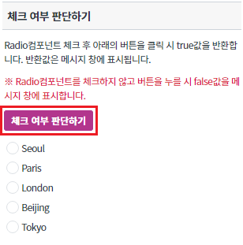
아래 그림과 같이 메시지 창에 'false' 가 표시되는 것을 확인합니다.
[브라우저(Chrome) 실행 예시]
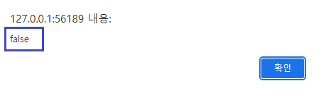
Radio컴포넌트 클릭 후 체크 여부 판단하기 버튼을 클릭합니다.
[브라우저(Chrome) 실행 예시]
아래 그림과 같이 메시지 창에 'true' 가 표시되는 것을 확인합니다.
[브라우저(Chrome) 실행 예시]
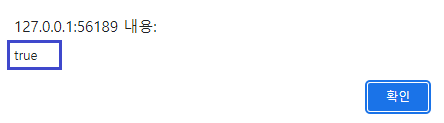
지정된 메시지 표시하기 버튼을 클릭합니다.
[브라우저(Chrome) 실행 예시]
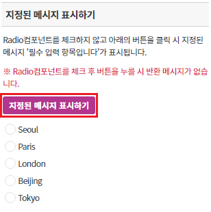
아래 그림과 같이 메시지 창에 '필수 입력 항목입니다' 가 표시되는 것을 확인합니다.
※해당 메시지는 시스템 엔진에서 지정해 놓은 메시지입니다.
[브라우저(Chrome) 실행 예시]
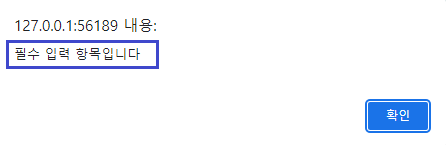
Radio컴포넌트 클릭 후 지정된 메시지 표시하기 버튼을 클릭합니다.
[브라우저(Chrome) 실행 예시]
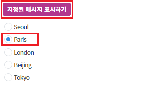
Radio컴포넌트가 체크되어 있으면 메시지가 표시되지 않는 것을 확인합니다.
사용자 설정 메시지 표시하기 버튼을 클릭합니다.
[브라우저(Chrome) 실행 예시]
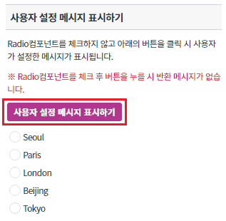
아래 그림과 같이 메시지 창에 '사용자 설정 메시지' 가 표시되는 것을 확인합니다.
[브라우저(Chrome) 실행 예시]
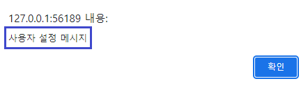
Radio컴포넌트 클릭 후 사용자 설정 메시지 버튼을 클릭합니다.
[브라우저(Chrome) 실행 예시]
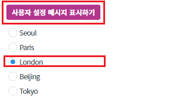
Radio컴포넌트가 체크되어 있으면 메시지가 표시되지 않는 것을 확인합니다.
사용자 지정 함수로 설정한 메시지 표시하기 버튼을 클릭합니다.
[브라우저(Chrome) 실행 예시]
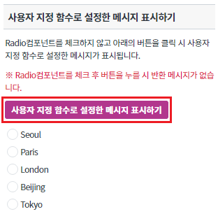
아래 그림과 같이 메시지 창에 '사용자 지정 함수로 설정된 메시지입니다.' 가 표시되는 것을 확인합니다.
[브라우저(Chrome) 실행 예시]
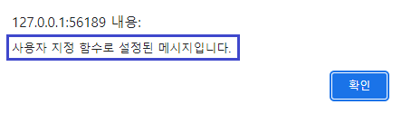
Radio컴포넌트 클릭 후 사용자 지정 함수로 설정한 메시지 표시하기 버튼을 클릭합니다.
[브라우저(Chrome) 실행 예시]
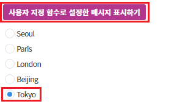
Radio컴포넌트가 체크되어 있으면 메시지가 표시되지 않는 것을 확인합니다.
Radio컴포넌트의 검증을 위해 아래의 함수를 사용합니다.
[선택] validate // 컴포넌트의 유효성 관련 속성값을 통해 유효성 검사를 실행
[소스 코드 예시]
/** * 버튼 [ 체크 여부 판단하기 ] 클릭 시 */ scwin.btn_ex1_onclick = function (e) { // Radio 'rad_exam1'의 체크 여부를 검증합니다. let message = rad_exam1.validate(); alert(message); };
[필수] mandatory="true" //[default:false, true] 필수 선택 적용 여부. validate 함수를 통해 입력값을 검증할 경우 필수 입력을 확인.
그림 1.웹스퀘어5 SP5 스튜디오의 Property View(속성창) 예시
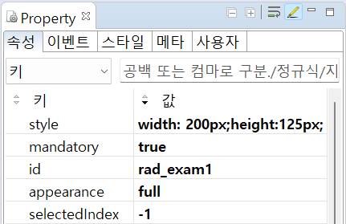
[소스 코드 예시]
<!-- radio의 소스 본문 예시 --> <xf:select1 mandatory="true" id="rad_exam1"> <xf:choices> <xf:itemset nodeset="data:dlt_dataList1"> <xf:label ref="City"></xf:label> <xf:value ref="Code"></xf:value> </xf:itemset> </xf:choices> </xf:select1>
Radio컴포넌트의 검증을 위해 아래의 함수를 사용합니다.
[선택] validate // 컴포넌트의 유효성 관련 속성값을 통해 유효성 검사를 실행
[소스 코드 예시]
/** * 버튼 [ 지정된 메시지 표시하기 ] 클릭 시 */ scwin.btn_ex2_onclick = function (e) { // Radio 'rad_exam2'의 체크 여부를 검증합니다. rad_exam2.validate(); };
[필수] mandatory="true" //[default:false, true] 필수 선택 적용 여부. validate 함수를 통해 입력값을 검증할 경우 필수 입력을 확인.
[필수] displaymessage="true" //[default:false, true] 기본적으로 엔진 내부에 정의된 메시지를 표시. 단, invalidMessage 속성이 정의된 경우, 해당 속성으로 정의된 메시지를 표시.
그림 2.웹스퀘어5 SP5 스튜디오의 Property View(속성창) 예시
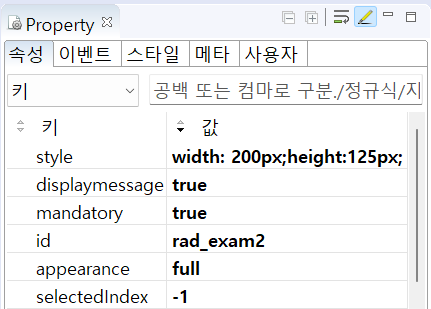
[소스 코드 예시]
<xf:select1 mandatory="true" displaymessage="true" id="rad_exam2"> <xf:choices> <xf:itemset nodeset="data:dlt_dataList1"> <xf:label ref="City"></xf:label> <xf:value ref="Code"></xf:value> </xf:itemset> </xf:choices> </xf:select1>
Radio컴포넌트의 검증을 위해 아래의 함수를 사용합니다.
[선택] validate // 컴포넌트의 유효성 관련 속성값을 통해 유효성 검사를 실행
[소스 코드 예시]
/** * 버튼 [ 사용자 설정 메시지 표시하기 ] 클릭 시 */ scwin.btn_ex3_onclick = function (e) { // Radio 'rad_exam3'의 체크 여부를 검증합니다. rad_exam3.validate(); };
[필수] mandatory="true" //[default:false, true] 필수 선택 적용 여부. validate 함수를 통해 입력값을 검증할 경우 필수 입력을 확인.
[필수] displaymessage="true" //[default:false, true] 기본적으로 엔진 내부에 정의된 메시지를 표시. 단, invalidMessage 속성이 정의된 경우, 해당 속성으로 정의된 메시지를 표시.
[필수] invalidmessage="yourMessage" //[default:"", "yourMessage"] displaymessage="true "이고 validate(); 검증 결과가 실패인 경우 표시되는 메시지.
그림 3.웹스퀘어5 SP5 스튜디오의 Property View(속성창) 예시
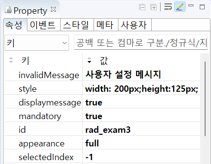
[소스 코드 예시]
<xf:select1 mandatory="true" displaymessage="true" invalidMessage="사용자 설정 메시지" id="rad_exam3"> <xf:choices> <xf:itemset nodeset="data:dlt_dataList1"> <xf:label ref="City"></xf:label> <xf:value ref="Code"></xf:value> </xf:itemset> </xf:choices> </xf:select1>
Radio컴포넌트의 검증을 위해 아래의 함수를 사용합니다.
[선택] validate // 컴포넌트의 유효성 관련 속성값을 통해 유효성 검사를 실행
[소스 코드 예시]
/** * 버튼 [ 사용자 지정 함수로 설정한 메시지 표시하기 ] 클릭 시 */ scwin.btn_ex4_onclick = function (e) { // Radio 'rad_exam4'의 체크 여부를 검증합니다. rad_exam4.validate(); };
[필수] mandatory="true" //[default:false, true] 필수 선택 적용 여부. validate 함수를 통해 입력값을 검증할 경우 필수 입력을 확인.
[필수] displaymessage="true" //[default:false, true] 기본적으로 엔진 내부에 정의된 메시지를 표시. 단, invalidMessage 속성이 정의된 경우, 해당 속성으로 정의된 메시지를 표시.
[필수] invalidMessageFunc="yourFunc" //[default:"", "yourFunc"] validate(); 검증 결과가 실패일 경우, 결과 메시지를 동적으로 표시할 사용자 정의 함수 이름.
그림 4.웹스퀘어5 SP5 스튜디오의 Property View(속성창) 예시
[소스 코드 예시]
<xf:select1 mandatory="true" displaymessage="true" invalidMessageFunc="scwin.fn_msg" id="rad_exam4"> <xf:choices> <xf:itemset nodeset="data:dlt_dataList1"> <xf:label ref="City"></xf:label> <xf:value ref="Code"></xf:value> </xf:itemset> </xf:choices> </xf:select1>
mandatory
displaymessage
invalidMessage
invalidMessageFunc
validate
[웹스퀘어5 SP5 개발 가이드] Radio
링크 : https://docs1.inswave.com/sp5_user_guide/8df43d1f59fab704#b82f1edea4db4407
[웹스퀘어5 SP5 개발 가이드] Radio 입력 검증 및 실패 메시지 표시
링크 : https://docs1.inswave.com/sp5_user_guide/8df43d1f59fab704#7ff41269fa72f386
Radio 입력 검증 및 실패 메시지 표시
링크 : https://www.youtube.com/watch?v=kKe7RFP_wFk
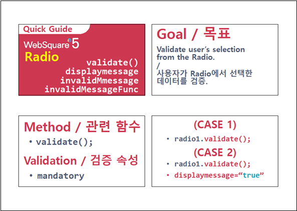
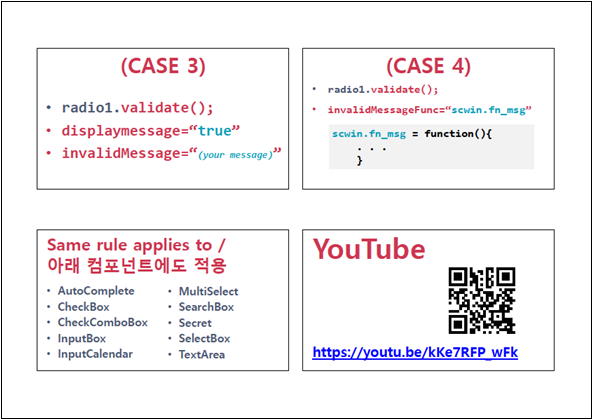